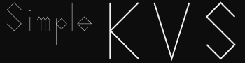

English
Welcome to Simple KVS


This library provides a very simple Key Value Store (not Server) for Unity. This KVS is helpful for the following purposes.
- Transferring data between scenes
- Save and load the data
Installation
via UPM (Unity Package Manager)
There are two ways to install the package: using the UPM (Unity Package Manager) or importing the .unitypackage.
Use This Git URL
- Open the Package Manager window.
- Click the add (+) button in the status bar.
- Select Add package from git URL.
- Enter "
https://github.com/kumaS-nu/Simple-KVS.git?path=Simple-KVS/Packages/Simple KVS" or "git@github.com:kumaS-nu/Simple-KVS.git?path=Simple-KVS/Packages/Simple KVS". - Click Add.
For more information, see the Official page (Installing from a Git URL - Unity).
Use OpenUPM
- If you have not installed OpenUPM-CLI, run the following command to install OpenUPM-CLI. (Node.js 12 is required.)
npm install -g openupm-cli - Go to the unity project folder
- Run the following command to install "NuGet importer for Unity" in your project.
openupm add org.kumas.simple-kvs
For more information, see the Official page (Getting Started with OpenUPM-CLI - OpenUPM)
Usage
This KVS has InMemoryKVS<T>, InMemoryKVS4UnityObject<T>, InFileKVS<S> and InFileKVS4UnityObject<S>.
InMemoryKVS<T>
Store data in memory. This class cannot store the data inherited from Unity.Object (such as MonoBehaviour). Instead, use InMemoryKVS4UnityObject<T> for these data.
var data = new Data { someData = "someData" };
// Store the data in memory. Keys are recorded by each type.
InMemoryKVS<Data>.Set("data_key", data);
// Get the data from memory. Note that data is deleted in memory when getting data by default.
var received = InMemoryKVS<Data>.Get("data_key");
// Of course, you can also use TryGet().
var (isStored, value) = InMemoryKVS<Data>.TryGet("data_key");
InMemoryKVS4UnityObject<T>
InMemoryKVS4UnityObject<T> is almost the same as InMemoryKVS<T>. However, the storing data must implement ISerializable.
class Sample : MonoBehaviour, ISerializable
{
private string someData;
public object Serialize()
{
// Serialize some data that does not inherit Unity.Object.
}
public void Deserialize(object data)
{
// Apply the stored data to this instance.
}
}
// Store the data in memory. Keys are recorded by each type.
InMemoryKVS4Unity<Sample>.Set("data_key", data);
var rcv = gameObject.GetComponent<Sample>();
// Get the data from memory. Note that data is deleted in memory when getting data by default.
InMemoryKVS4UnityObject<Sample>.Get("data_key", rcv);
// Of course, you can also use TryGet().
var isStored = InMemoryKVS4UnityObject<Sample>.TryGet("data_key", rcv);
InFileKVS<S>
Save the data to a file. The generics type specifies the serializer to use and must inherit from ISerializer. InFileKVS<S> cannot store the data inherited from Unity.Object (such as MonoBehaviour). Instead, use InFileKVS4UnityObject<S> for these data.
var data = new Data { someData = "someData" };
// Save the data in file. Keys are recorded by each type.
InFileKVS<JsonUtilitySerializer>.Set<Data>("data_key", data);
// Load data from file.
var received = InFileKVS<JsonUtilitySerializer>.Get<Data>("data_key");
// Of course, you can also use TryGet().
var (isStored, value) = InFileKVS<JsonUtilitySerializer>.TryGet<Data>("data_key");
// Asynchronous API is also available.
var received2 = await InFileKVS<JsonUtilitySerializer>.GetAsync<Data>("data_key");
InFileKVS4UnityObject<S>
InFileKVS4UnityObject<S> is almost the same as InFileKVS<S>. The generics type specifies the serializer to use and must inherit from ISerializer4UnityObject.
var data = gameObject.GetComponent<MonoData>();
// Save the data in file. Keys are recorded by each type.
InFileKVS4UnityObject<JsonUtilitySerializer>.Set<Data>("data_key", data);
var rcv = gameObject.GetComponent<MonoData>();
// Load data from file.
InFileKVS4UnityObject<JsonUtilitySerializer>.Get<Data>("data_key", rcv);
// Of course, you can also use TryGet().
var isStored = InMemoryKVS<JsonUtilitySerializer>.TryGet<Data>("data_key", rcv);
// Asynchronous API is also available.
await InMemoryKVS<JsonUtilitySerializer>.GetAsync<Data>("data_key", rcv);
Environment
This library works with Unity2021.2 and later.
API
The API documentation is available here.
Contributing
We welcome any contributions (bug reports, desired features). If you write the problem in the issue, I will fix it.
License
This package is under MIT License 2.0.
Author
kumaS (If I cannot use this name because it is used, add -nu as a tag.)
Twitter
日本語
Welcome to Simple KVS

このライブラリはとてもシンプルなUnity向けのKey Value Store (Serverではない)を提供します。 このKVSは以下の用途で役に立ちます。
- シーン間のデータの受け渡し
- データの保存と読み込み
インストール方法
UPM (Unity Package Manager) を使う
UPMを使って導入するには、このGit URLを指定する。または、OpenUPMを使って導入するという二通りあります。
Git URL を指定する
- Package Managerウィンドウを開く
- ステータスバーの Add (+) ボタンをクリック
- Add package from git URL を選択
- 「
https://github.com/kumaS-nu/Simple-KVS.git?path=Simple-KVS/Packages/Simple KVS」または「git@github.com:kumaS-nu/Simple-KVS.git?path=Simple-KVS/Packages/Simple KVS」を入力 - Add をクリック
詳細は公式ページ(Git URL からのインストール - Unity)をご覧ください。
OpenUPM を利用する
- OpenUPM-CLI をインストールしていない場合は、以下のコマンドで OpenUPM-CLI をインストールする。(Node.js 12が必要です。)
npm install -g openupm-cli - インストールする予定のプロジェクトのフォルダへ移動する。
- 以下のコマンドで、プロジェクトにインストールする。
openupm add org.kumas.simple-kvs
詳細は公式ページ(Getting Started with OpenUPM-CLI - OpenUPM)をご覧ください。
使い方
このKVSにはInMemoryKVS<T>・InMemoryKVS4UnityObject<T>・InFileKVS<S>・InFileKVS4UnityObject<S>があります。
InMemoryKVS<T>
メモリ内に保存します。Unity.Objectを継承したクラス（MonoBehaviourなど）は使えません。InMemoryKVS4UnityObject<T>を使用して下さい。
var data = new Data { someData = "someData" };
// メモリにデータを渡す。キーは型ごとに保存される。
InMemoryKVS<Data>.Set("data_key", data);
// メモリからデータを受け取る。デフォルトでは取得するとデータは消去されるため注意。
var received = InMemoryKVS<Data>.Get("data_key");
// もちろんTryGetもできる。
var (isStored, value) = InMemoryKVS<Data>.TryGet("data_key");
InMemoryKVS4UnityObject<T>
InMemoryKVS<T>とほぼ変わりません。ただし、データはISerializableを実装する必要があります。
class Sample : MonoBehaviour, ISerializable
{
private string someData;
public object Serialize()
{
// Unity.Objectを継承しない何らかのデータにシリアライズする。
}
public void Deserialize(object data)
{
// 保存したデータをこのインスタンスに適用する。
}
}
// メモリにデータを渡す。キーは型名ごとに保存される。
InMemoryKVS4Unity<Sample>.Set("data_key", data);
// メモリからデータを受け取る。デフォルトでは取得するとデータは消去されるため注意。
InMemoryKVS4UnityObject<Sample>.Get("data_key", received);
// もちろんTryGetもできる。
isStored = InMemoryKVS4UnityObject<Sample>.TryGet("data_key", value);
InFileKVS<S>
ファイルに保存します。ジェネリクスの型は使用するシリアライザを指定しISerializerを継承する必要があります。Unity.Objectを継承したクラス（MonoBehaviourなど）は使えません。InFileKVS4UnityObject<T>を使用して下さい。
var data = new Data { someData = "someData" };
// ファイルにデータを保存する。キーは型名ごとに保存される。
InFileKVS<JsonUtilitySerializer>.Set<Data>("data_key", data);
// ファイルからデータを取得する。
var received = InFileKVS<JsonUtilitySerializer>.Get<Data>("data_key");
// もちろんTryGetもできる。
var (isStored, value) = InFileKVS<JsonUtilitySerializer>.TryGet<Data>("data_key");
// 非同期にも対応。
var received2 = await InFileKVS<JsonUtilitySerializer>.GetAsync<Data>("data_key");
InFileKVS4UnityObject<S>
InFileKVS<S>とほぼ変わりません。ジェネリクスの型は使用するシリアライザを指定しISerializer4UnityObjectを継承する必要があります。
var data = gameObject.GetComponent<MonoData>();
// ファイルにデータを保存する。キーは型名ごとに保存される。
InFileKVS4UnityObject<JsonUtilitySerializer>.Set<Data>("data_key", data);
var rcv = gameObject.GetComponent<MonoData>();
// ファイルからデータを取得する。
InFileKVS4UnityObject<JsonUtilitySerializer>.Get<Data>("data_key", rcv);
// もちろんTryGetもできる。
var isStored = InMemoryKVS<JsonUtilitySerializer>.TryGet<Data>("data_key", rcv);
// 非同期にも対応。
await InMemoryKVS<JsonUtilitySerializer>.GetAsync<Data>("data_key", rcv);
動作環境
Unity2021.2以降であれば動きます。
API
APIのドキュメントはこちらにあります。ご活用ください。
コントリビュート
どんなコントリビュート（バグ報告やほしい機能）でもしていただけるとありがたいです。issueに書いてくれれば直しときます。
ライセンス
これについては、MIT License です。